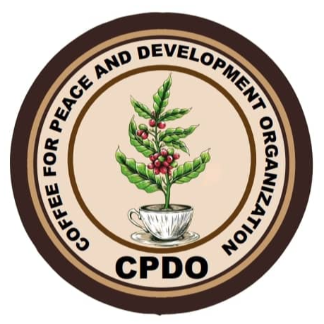

Our story

Find out more about the people behind NNS Coffee Association.


Our mission at NNS Coffee Association is to transform South Sudan's
coffee sector. We strive to meet international and local market demand
by establishing a reliable market for coffee beans and expanding into
regional and international markets.
To achieve this, we collaborate with local coffee farmers, providing
training, enhancing their coffee processing methods, and supporting
them with coffee seedlings.
Through our partnership, we establish local coffee shops, ensuring a
stable market for our high-quality, organic Excelsa coffee.
By empowering local farmers and promoting sustainable practices, we
aim to establish South Sudan as a renowned producer of premium,
organic coffee.